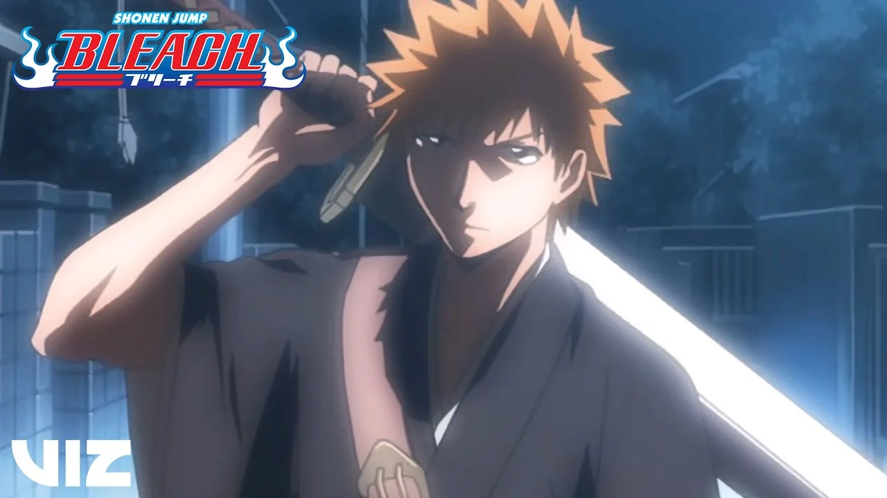
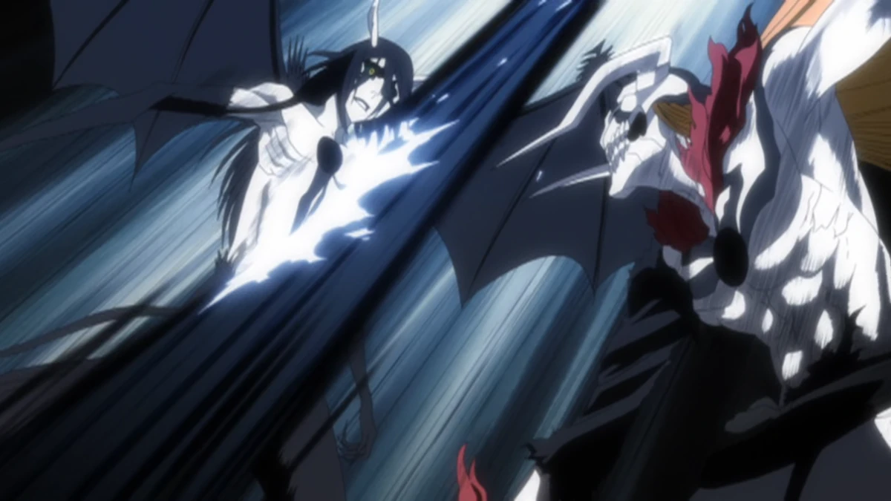
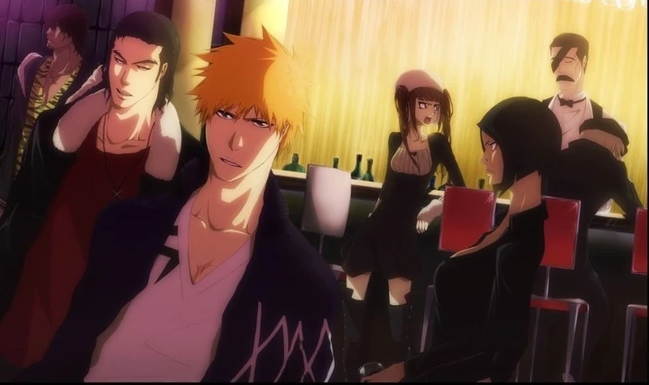
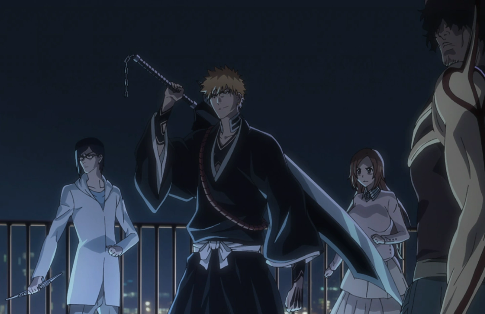

01

Substituto de Shinigami
Ichigo conhece Rukia e se torna um Shinigami substituto para proteger sua cidade.

Principais Eventos
- Encontro com Rukia Kuchiki
- Ichigo obtém poderes de Shinigami
- Proteção de Karakura contra Hollows
- Introdução aos personagens principais
02

Soul Society
Ichigo e seus amigos invadem a Soul Society para resgatar Rukia da execução.

Principais Eventos
- Invasão da Soul Society
- Batalhas contra os capitães e tenentes
- Revelação sobre a história de Rukia
- Descoberta sobre os planos de Aizen
03

Vizards
Ichigo treina com os Vizards para controlar seu Hollow interior e enfrentar os Arrancars.

Principais Eventos
- Ichigo descobre seu Hollow interior
- Treinamento com os Vizards
- Aparição dos Arrancars
- Batalha em Karakura
04

Arrancars
Confronto contra Aizen e seus exércitos de Arrancars em Hueco Mundo e Karakura.

Principais Eventos
- Invasão de Hueco Mundo
- Batalhas contra as Espadas
05

Fullbringers
Tentativa de recuperação dos poderes de Ichigo com a Xcution.

Principais Eventos
- Treinamento de Chad e Ichigo com fullbringers
- Batalhas contra os Fullbringers
- Recuperação dos poderes de Ichigo
- Batalha Final contra Tsukishima
06

GUERRA SANGRENTA DOS MIL ANOS
Guerra contra os quincies, mil anos após a última guerra vencida pelos shinigamis.

Principais Eventos
- quincies escravizando o Hueco Mundo
- Batalhas contra os quincies
- Novas bankais reveladas
- Muitas baixas dos dois lados
- Tentativa do Rei Quincy de se tornar o rei das almas, destruir os 3 mundos e criar um novo mundo